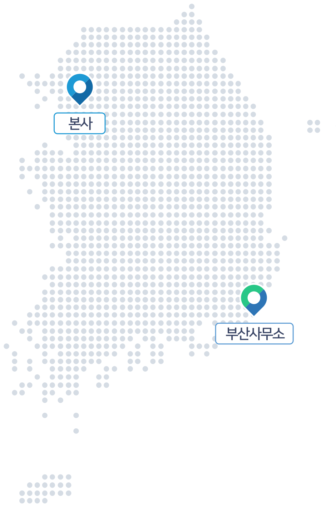
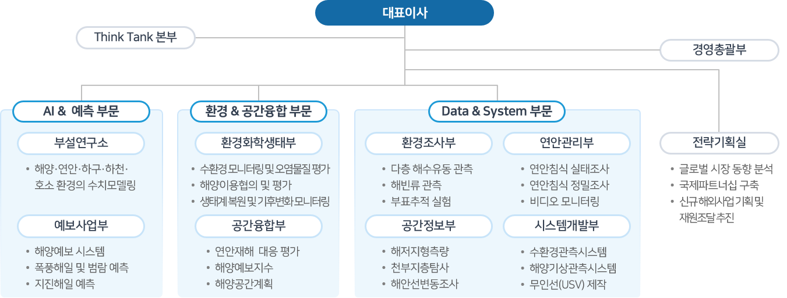

사업장

● 본사 : 경기도 군포시 엘에스로 172, 306호
● 부산사무소 : 부산광역시 해운대구 세실로69번길 24, 5층
회사 개요
회사명
(주)지오시스템리서치
대표이사
김기연
설립일
2000년 7월 4일
임직원 수
190명 (26년 1월 기준) · 석사 53 · 박사수료 11 · 박사 24 · 기술사 13
사업분야
하천, 연안, 해양 등 수환경 엔지니어링 솔루션
홈페이지
www.geosr.com
기업조직구성
